AlaskaStories.com
Stories 13...
Page contents:
08 Moose Meander: Hunting
08 Big Bottle Party: Society
08 Annual Christmas form letter:
Society
Hey, this aint no bullshit...
2008 Moose Meander
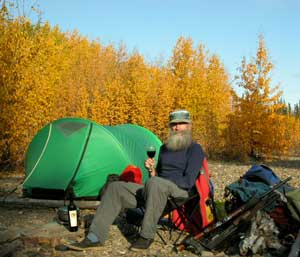
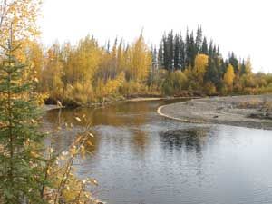
There I was mind you, and it was desperate indeed, really this time.
It started out okay, and just got better each day, for several days, as you can see from the first camp photos. Nice weather.
That first bottle of wine was a wonderful Ilona zinfandel. Then a nice Horizon's Edge, On The Fence cabernet.
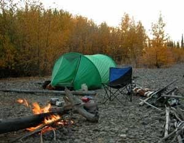
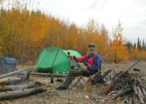
Ahhh, same old thing ya know. Deese guys get in a rut and just keep liking what they keep doing even more. If you are not in that rut, you do not even notice them going by. And that is the way it should be. Imagine the chaos if the ruts ran into each other in a big rut jumble. You could start the day going on the same old fishing trip in your favorite secret Louisiana bayou, to catch catfish, with fine Kentucky bourbon, and end up on Secret Creek in Alaska, with fine California wine and a large caliber rifle where your fishing pole was sitting. No catfish in the creek anyway.
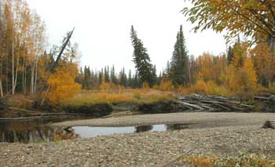
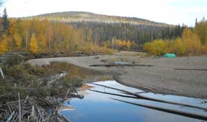
Starting out the first day from the road, it was a bit disconcerting to notice that Secret Creek was not just as low as it was last time when it was really low, but lower. Fairbanks folks were talking about the rainiest summer since summers were invented, but they got so carried away with their rainy summer stories that they could not make the full story adjustment for the latter part of August when it did not rain. In fact, the sun sucked the previous rain back out of the ground, up into the air, and took it somewhere else, especially in the Secret Creek valley. The photos showing plenty of water in the creek were the result of the usual picture-taking where it was nice, between the riffles. You take pictures where things are nice, not where you are dragging the kayak over wet rocks, your feet slipping sideways on the slick rocks, muttering about whatever can be muttered about. And some of that nice calm water was only an inch deep. A few log jumbles crossed the creek too, since there was not enough water to float them down the creek.
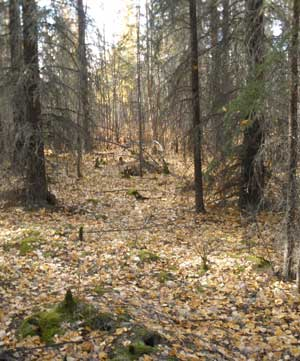
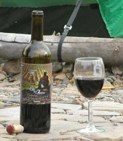
Well, the photos of the story went up creek faster than the words of the story went up creek, so you can read about some of the photos somewhere later in this word jumble.It was early the first day. I was looking for a moose, meandering up Secret Creek with my kayak in tow, dragging it over wet rocks at each shallow riffle, progressively concerned with the low water. I wisely decided that this year I would stop at my traditional first day camp, and stay there. That is the camp in the first photos, pretty much the same as in the other Secret Creek moose stories. Even at only one day up the creek there would be a lot of carrying loads of moose meat on my back, back down past each shallow riffle, if I was so foolish as to shoot a moose. I was hoping for heavy rain, to get some water in the creek.
It was sunny.
In fact I would have stopped even sooner, but I was following an aluminum trail on the rocks in the creek. Apparently there was some new guy on the creek, ahead of me, who did not know any better, dragging an aluminum canoe over the rocks, or what would be left of it after leaving so much of it on the rocks. Well, that is how people learn things. Reminds me of the time I did much the same, entirely too many times. My curiosity increased as I went around each bend, expecting to see a camp and somebody trying to repair an aluminum canoe with no bottom
.
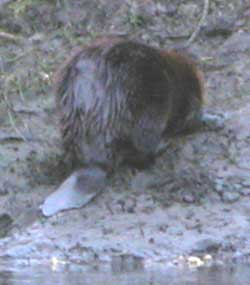
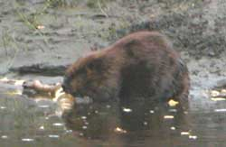
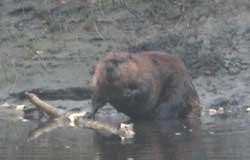
Most of the normally deeper, slow flat parts of the creek had adequate water for floating a loaded kayak, as usual, but those riffles between them did not have the ample fast water for gliding down this year. Nor were there any beaver dams on the creek this year, which are obstacles, but more easily crossed than rocks. Beaver ponds would have helped cover some shallow areas. Plenty of beaver as usual, but just no beaver dams. Might have been some beaver labor strikes on the dam projects. There is a lot we do not know about beaver thinking.
When I finally came around that bend and saw a noticeably often-used wall tent with an well used stove pipe, a chain saw and a stack of cut campfire wood, I was duly impressed. I figured I was a tough guy with a heavy load of 5 bottles of fine wine I was dragging up that creek, but a wall tent and a chain saw indicated some serious tough guys. There was no canoe beside camp, so they were yet further upstream for the day, as the aluminum trail soon indicated.
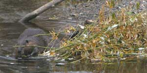
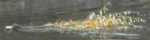
Well, I enjoy encountering other moose hunters in whatever moose hunting area I am in because you meet the nicest folks back where only people as odd as yourself go. I trudged on, lining my kayak upstream, getting really curious as to just how far those folks would go. When I came around a bend farther upstream than I thought anyone else would go, there were two gentlemen of such a moose hunter visual stature and obvious years of experience that Cabela's or Hollywood would have hired them on the spot. These guys would be selected for the calendar photo or a Norman Rockwell painting. "Alaska moose hunters."We chit chatted, mostly about the low water and the foolishness of anyone who would consider dragging a kayak or canoe with a load of moose down that meandering stream bed of wet rocks. We laughed. They were enjoying the day, leisurely waiting for evening, to quietly drift back down to camp, looking for an evening moose.
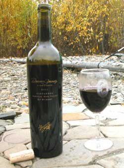
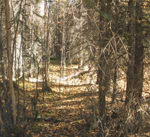
Then they told me about the two kids even further upstream in another canoe. "Tough guys." Well, if you are making a mistake, just as well do it when it is obvious so you won't be fooling yourself the next time you decide to make the same mistake. I trudged onward to meet the tough guys, following their aluminum trail.After a few more bends I caught up with the tough guys, leisurely hunting as they went, looking back in the trees on occasion. We chit chatted. It was their first time on Secret Creek. We discussed other such admirable areas around the State, of which they knew a few, each secret of course. One of these guys was from the coast, so we told some sea kayaking and coastal bear stories. They were going to camp soon. I passed by them with a dedicated pace, knowing precisely where I was going to camp farther upstream that evening, and wishing to get there early to insure that I had ample time to sit beside the campfire with a glass of fine wine, such as that nice Downing Family zinfandel with a stager wing biplane on the label.
And that is just what I did.
I was, however, mildly miffed to notice that apparently somebody had dared to arrive at the same place after I left it last year, and burnt most of the wood pile I left, including my tent stake-out stumps. After setting up camp and sitting by the campfire fire awhile, a careful analysis, with a glass of wine in hand, indicated that the fellow adventurers were apparently there in the winter, traveling by snow machine. Their campfire was located nearby where I would put a winter camp. They most likely did not recognize my camp site as a camp site, under the snow, especially my nice flat rock table I have added-to each year.
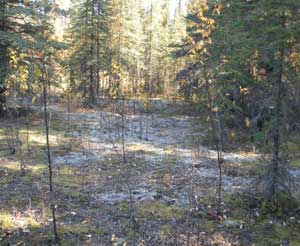
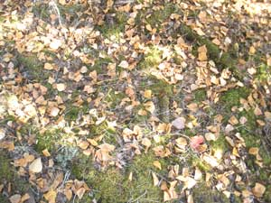
With the beaver along the creek actively cutting campfire-sized sticks and logs that are strewn along the sides of most of the gravel bars, gathering too much fire wood is not an arduous or time consuming endeavor. My wood pile was shortly restocked. I did some trimming on the new willow growth to clear my fields of vision toward where a moose should show up, and settled in for what I hoped to be a few days of camping in paradise with good wine, before calling a moose into camp, hopefully on the downstream side of the adjacent log jam and the next nearby stretch of rock riffles.Some campsites are like a comfortable couch. This was one of them. In the following few days I did some walk-abouts through the beautiful autumn forest of birch, poplar and spruce, there in the photos. The occasional breezes brought showers of yellow birch and golden poplar leaves fluttering down around me. The nearby old slough bed was noticeably higher and drier in relation to the creek that has actively eroded a deeper channel during the spring ice breakups. Where I paddled my kayak the first couple years, had not been covered in summer water for a few years. The grass and small brush were extending their residence over the previous mud.
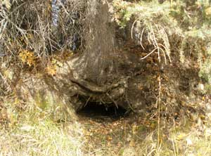
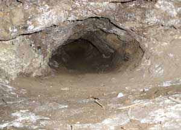
Along the old slough bank I checked out the fox den, the wolf den, the bear den, and the old abandoned beaver house with the entrance under the big leaning double spruce tree. I awkwardly stuck the camera with a flash back in the dens a ways, and looked at the photos to see what was in there, hoping to not see a set of teeth. The tranquility and deep forest silence of the willow patch back a ways from the creek absorbed my thoughts, until a big rabbit suddenly went thumping away from me as I swung my rifle off my shoulder to face what surely sounded like a charging bull moose. Well, a small noise in silence, sounds big.
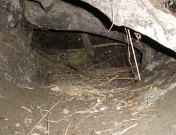
This year the resident beaver with their house close to my tent apparently recognized me right away because they rarely slapped the water as they swam back and forth while I sat in my camp chair, watching. They were collecting willow and poplar branches, taking them to the dinner table in their house. Every once in awhile I would hear some serious wood-chewing in the forest by the creek, interrupted by periods of silence while the beaver listened for any sound of anything which might have heard the chewing and was coming for a beaver supper. Then the sound of a small poplar tree falling was to be heard in the forest. Soon a beaver would come into sight at the creek bank, dragging a large branch, and slide down into the water.I watched the beaver, with only their heads visible above the water, slowly paddling tree branches of golden leaves sticking up above the water like an arch of ship flags. Sometimes the beaver would stop along the way, at the muddy stream bank, and eat the bark off part of the branch, like eating corn on the cob, then continue on. Well, not all the candy bars from the grocery store make it all the way home. Approaching the beaver house, at the same spot each time, the beaver would rise up a bit and dive down, with the branch of leaves slowly following until the last leaf disappeared.
Beaver do not think like humans, or, maybe they do. One beaver brought branches from the woods, and stashed them in the water at the edge of the creek, poking the end into the mud, not taking them to his house. Then he returned for another branch in the woods. After several branches accumulated, he started hauling them to the house, one by one. On one occasion a branch in the stash became dislodged, and started floating down the creek. It was a perfectly good branch with plenty of nice leaves. The beaver returned, noticed that the branch was floating away, swam completely around the branch, and let it float away. Well, some people let food in the frig go bad too.
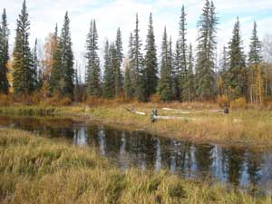
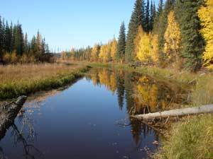
I cut an arm load of fresh willow branches, and took them down to the creek to lay in the water. The beaver were at them within two minutes, and began taking them to their house. A few branches drifted away, without concern by the beaver.On one occasion when I heard the beaver chewing away on a larger poplar tree, I walked down to the narrow creek, on my side, fine wine in hand, to be standing near where the beaver would be coming out of the brush with his branch. However, the other beaver paddled past, decided that I was being a bit too nosy, and slapped his tail. The beaver in the bush came scurrying out to the bank without a branch, looked at me with an expression of irritation, and slid down into the safety of the water. He came back to the surface to slap his tail. I walked back to my camp chair, and they were shortly at the effort again.
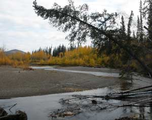
There was the moment on the back side of camp, when I was a ways from the tent without my rifle, when I heard a moose-quality noise uncomfortably close in the woods. I hastily hot-footed it to my tent, grabbed my rifle and zipped back to the edge of the woods. I saw nothing. Then heading over to the creek, hoping to see a moose walk into view, I saw a very large beaver tumble down the steep rocky creek bank, and walk across a wide shallow part of the creek, desperately trying to reach deep water to escape the noise he had heard, me. He had a long ways of shallow water to walk through, and presented an amusingly clumsy image.A cow moose ambled by on a couple days, and browsed along the slough across the creek from my camp. She looked at me on occasion, with a typical cow moose lack of concern. A camp cigar of fine tobacco leaves graced the pleasant autumn aromas during a couple afternoons. A day of blustery swirling wind offered the entertainment of the tall spruce creaking and groaning, some of them rubbing against each other near the tops. Odd sounds came from the forest. Ravens talked to each other, and maybe to me as they flew by, circling to check out the camp. A pair of goshawks perched in a nearby tree to watch me awhile. Red tail hawks drifted by on occasion, sometimes being harassed by ravens or kestrels. A bald eagle flew up the creek. A bunny rabbit came running through the willows until it came to my camp, then frantically ran back and forth in the willows, between the open areas on each side, in seeming confusion, perhaps I guessed, afraid of me, but also afraid of something that had been chasing it, maybe a wolf.
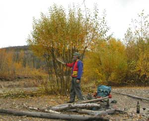
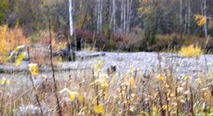
One evening, after scraping the adjacent willow bush with a moose scapula bone, to make the sound of a bull scraping the velvet off his antlers, or challenging other bulls, I casually made a moose call while looking across the creek to where I figured a moose should therefore appear. Within moments two completely black wolves appeared, looking at what they figured should be a moose. We were equally amused.That is me in the photo, scraping the willow bush. Those are the two black wolves in the other hastily taken photo. One is beside the bottom of the white birch trunk, and the other is coming toward me behind the closer brush. One of them noticeably nodded to the other who therefore crossed the creek toward me, to slip around the back side of my camp, in the trees, while the first one melted into the trees on the other side of the creek, going in the direction around the front side of my camp. I did not see them again. But later I noticed their tracks joined in the wet sand by the creek on the other side of my camp. They most likely ascertained much about me. Perhaps they were cousins of the pack of white wolves I had seen the previous two years.
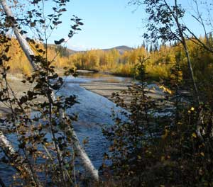
A couple nights the valley wolves at two different locations set about to inform the world of their presence, with much howling, including varied tones, some with a spine chilling effect. One such serenade ended with a weird loud screech from another location, from an unknown creature perhaps deciding to challenge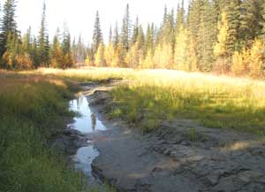
the noise of the wolves. Not all things in the forest are explained.The usual profusion of wolf tracks, black bear tracks, and a lone set of fresh grizzly tracks graced the creek bank. Not many moose tracks, albeit as usual. Not many human moose hunters on Secret Creek because the many non-human moose hunters keep the moose population rather gaunt.
So it was that a few days passed in good order. Sunny days. A bit of drizzle but no real rain. Icy mornings. Aurora's at night. The night sky so clear that many details in the Milky Way could be seen. Owls hooted their conversations.
But a good camp is only as good as one's tolerance for the same sights. There having been so few moose tracks along the creek this year, and the nearby bear den looking like it was used last winter, and a modicum of curiosity about what was around the next bend this year, led to my openly questionable decision after a week, to drag my kayak upstream over more rocks, starting with one of the worst of the riffles right at the get-go. I hoped for rain.
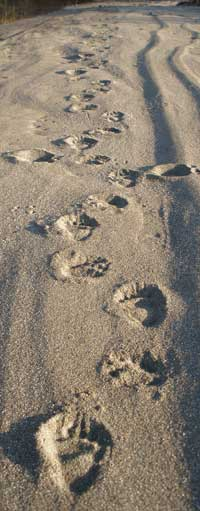
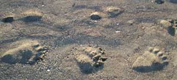
My intention was to go only a little ways. It was nice to notice the grizzly tracks going downstream while I was going upstream.Well, it was such a nice day I just kept on methodically moving upstream, dragging my kayak, calculating that I could dig trenches through each fan of wet pebbles. I carried an old army entrenching tool for just such contingencies. You might recognize the ease of imagining digging a little trench for water through pebbles, in comparison to the process of actually doing the digging, and digging, and digging.
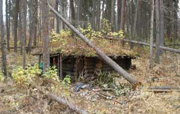
Along the way I went by a friend's little secret cabin on Secret Creek , hidden back in the trees, abandoned for other adventures, a classic among classics, with a story of its own. A place of Alaska history representing many such secret places. All is as it should be at the secret cabin again this year. I again straightened up a few things just enough so they would melt into the ground in their proper position for the curiosity of future archeologists. History should be kept straight.
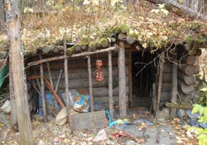
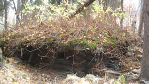
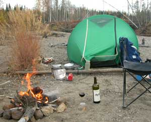
I came upon a very interesting phenomenon.... If you are a geologist, scoot closer to your screen. At one long straight stretch in the creek, with deeper, slow moving water, slightly above my ankles this year, and high banks on both sides, an old well known rock stood guard in the middle of the creek, near the upstream end of the straight stretch. It is a prominent rock, about 5 feet in each dimension, with a somewhat pyramid shaped top. It was convenient to easily notice the varying depth of the water by the water marks on the rock. I had heard of it years before I went to Secret Creek the first time. Well, this year I came around the corner to the straight stretch, and had difficulty understanding what I was seeing. There nearby in the middle of the creek at the lower end of the straight stretch, was a large rock, about 5 feet in each dimension, with a somewhat pyramid shaped top. Looking past it, I could see that the rock that was supposed to be up at the upper end of the straight stretch, about 300 yards away, was not there. This was not a small rock. And it was a dense heavy rock. This was a calm water stretch of the creek that never saw swift water. The rock was in the exact same position in the middle of the creek, just 300 yards downstream. Something powerful had moved it. I walked around it. There were no drag marks in the sand bottom of the calm water. I looked up for UFO's. I listened for eerie sounds. I stood still to feel any possible energy anomalies wafting about. Well, things happen. Sometimes they are hard to explain. The rock photos are at the bottom of the page.I trudged onward, walking in the middle of the creek, pulling my kayak, looking over my shoulder on occasion. Well, the grizzly bear could come back upstream. So could the rock.
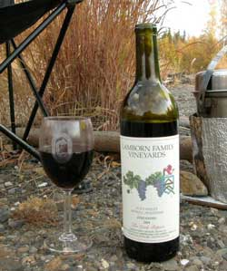
For some reason, perhaps energy anomalies, I casually walked right on past Moose Jaw camp, normally my second day camp. The moose jaw bones were still there, laying beside the flat rocks I had gathered for my ground level camp table. Well, still no moose tracks, and I had become accustomed to imagining my ability to easily trench through the pebble fans of the creek.If fact, by the time a lurking suspicion of my return trip difficulties finally caught up with my mind, I was too far up a creek with too little water, but confident that it would rain. I repeated to myself many times..... Shoot only a small bull, not a big bull. Big bulls have a lot more meat than a small bull, a lot more weight. Shoot only a small bull.
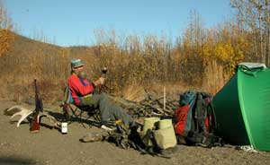
I set up another nice camp at a nice place. There are a lot of nice camp places on Secret Creek.
It did not rain, but there was still time for rain.
I enjoyed campfires and fine wine a few days. In fact, I had saved the Lamborn Family 2001 zinfandel for this latter part of the hunt, in case I was so fortunate as to have not yet shot a moose, on account as Lamborn Family wine is such a wonderful flavor for such a wonderful place and time.
I did some walk-abouts and saw interesting sights. An area of burned hummocks presented a funny flat of bumps that could not have been made any other way. I climbed a hillside, sat a long while, ate ripe cranberries and surveyed the autumn realm. I looked back at my camp along the creek beyond an area of small burnt spruce trees, there in the photo. I watched an old hidden slough of grass where I figured a moose should show up. I even waited for one, awhile.
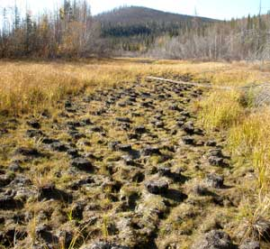
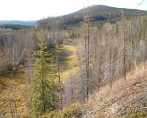
Camp is on the right side of the photo below, on the creek.
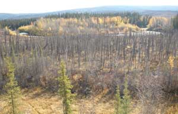
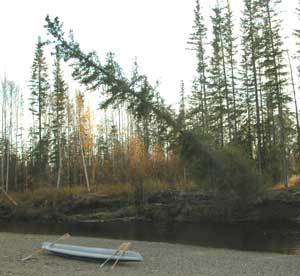
Great Horned Owls landed in adjacent tree tops each evening, to look down at me awhile. They liked the tree leaning out over my kayak. They bobbed their heads from side to side, hooted awhile, sometimes screeched a bit, then flew away. For one leisurely walk-about I lined my kayak upstream a ways to last year's bear adventure camp, very careful to avoid seeing any moose that far up the creek past yet more shallow riffles. Last year's antler-scraped willow trees had not been used this year. There might be no bull moose in the realm. There are many bears and wolves on Secret Creek, and they eat moose. I picked up the old shed moose antler that I used for camp furniture last year, and brought it back for camp furniture this year. That is it my rifle is leaning against in the photo.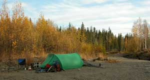
A cow moose silently walked by close to camp, watching me. Ruffed grouse could be heard drumming back in the woods. One morning in the dim light I appreciated seeing a lone white wolf watching me from the other side of the creek, until more light illuminated the white bark birch stump that I also appreciated. Any birch stump that can look so much like a wolf deserves appreciation.
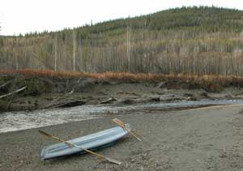
A cute little whirlwind with autumn leaves came across the gravel bar then swerved to cross my camp fire. It was by a split second that I successfully covered my glass of wine, to save its wonderful flavor from a shower of ashes. Well, some wines have a nice smoky flavor, preferably from the wine itself.A bit of snow accented a brisk morning, casting more doubt on my hopes for rain.
After awhile there were only a couple days left in the hunting season, but sufficient wine for those couple days, judiciously savored, and a reserve of Gamel Dansk of course.
I was occasionally calling for moose, and rattling the willows with the moose scapula bone.
It was mid morning when I heard a faint, unusual sound, distant, like some sort of bird, but with the measured repetition of a bull moose grunting. The repetition sequence elevated my sensory perceptions, a light dose of adrenalin mixed with uncertainty and anticipation, a natural response known to hunters, bird watchers and outdoor adventurers of several sorts. I was perplexed by this odd sound, but patient as I comfortably sat in my camp chair beside a morning campfire. Time passed casually. After awhile, I heard it again, closer, not moose-like, but again with a moose-like repetition, like a bull moose with a voice problem, responding to my call.
I watched the area across the creek, above my kayak in the photo with the open gravel bank, from where the sound seemed to come, a semi-open area of burnt spruce and fireweed. More time casually passed, as it does where no one is in a hurry, especially sitting in a chair by a campfire. I was looking through some thin little old burnt black spruce trunks, when I slowly noticed that the two unusual light colored areas, moved. I was looking at banner antlers of a big moose. The dark moose was essentially invisible by its color. All I could see were the antlers, facing me. Their slow movement indicated the nature of a big old moose, unlike the quicker movements of a younger moose. This guy probably came a long ways down from the hills that morning. The moose called again, with an old sounding voice, then slowly stepped to one side from behind the burnt tree trunks, much closer to me than its prior image indicated. He was "right there." And he was big.
I was sitting in my camp chair, beside my tent and the camp fire.
Now what? "Shoot only a small bull, not a big bull." "Big bulls are heavy." "There are too many shallow riffles." "But the season is almost over." "A small bull might not show up." "There weren't that many shallow riffles." "I can dig trenches through them." "I have time for a longer return." "I did not get a caribou this year." "It won't be that bad." "I am only two days up the creek." "I have shot a moose four days up the creek before." "It still might rain."
The moose turned to walk into an adjacent area of burnt larger birch tree deadfall where it would be more work to carry the meat out. Can't let that happen. "Bang."
That is when it got desperate, albeit as usual.
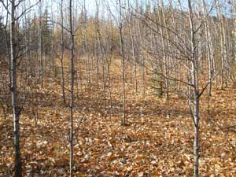
There were in fact a lot of shallow riffles. Digging trenches through pebbles that are solidly embedded among more pebbles is a lot of hard work. Two days up the creek is twice the distance of one day up the creek, and one day was too much for such low water. Big bulls are heavy.
I was too far up a creek that had too little water, with too big a moose. It was desperate, really.
I laughed. Some lessons you just have to keep learning over and over.
I waded across the creek, and started butchering the moose about noon, this time with my hand gun in my shoulder holster, under my shoulder, routinely looking up and around for last year's bear family that was only a short ways across an open burnt area. Besides more meat in general, a big moose has a lot more neck meat, a lot more. Big antlers are heavy, and require more muscle. These antlers had a 57 inch spread, enough to qualify as big.
There about 8:PM, with no break for food, I had the moose in the kayak, back across the creek a few feet to the side of my camp. I was shortly sitting beside the fire, enjoying fine wine, a Folie au Deux zinfandel, as nightfall quietly wrapped around me. A full moon rose above the evening clouds to illuminate the faint night sounds from the forest. My friends the owls came by, landed in a couple trees adjacent to camp, and watched me awhile. The bubbling of the
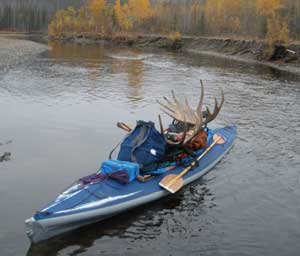
nearby riffles sounded louder every once in awhile. A beaver up creek slapped the water on occasion, perhaps warning his family of wolves or a bear sneaking down creek toward a moose meat smell, or perhaps slapping the water for reasons unknown to humans.As usual I tied my kayak lining rope to the moose antlers by my tent, with a cooking pot perched on the antlers, and the kayak paddles balanced on the kayak. If a competing meat eater decided to sample MY moose at night, his effort would make noise, and I would come out of the tent fast, armed and with full fury, or so I imagined each night as I drifted into sleep amid illusions of lurking bears and other meat eating monsters.
In a good year, with a small moose and good fortune, I could be back to the road in one full day, or at the most, two leisurely days.
With what turned out to be laughable illusions of reaching my first camp, I set out in the early morning. I was promptly unloading part of the load to carry it past the first riffles, then pushing and pulling the still-too-heavy kayak over the rocks. The aforementioned lurking suspicion was close by, laughing.
Day 1. 18 carries of one to eight heavy loads, past riffles. I did some trenching at places, to get another inch or two of water under the kayak. I laughed a lot. But I got past Moose Jaw camp, my normal second day camp. I marveled again at the big rock that moved 300 yards, beyond the ability of fast water in a calm level section of the creek. I camped late, somewhere a short distance down the creek. Not a good camp. Rocky but in the lee of a log, protected from a nasty wind coming up creek. No campfire. Freezing rain was spitting on my tent as I ruffled around inside, protected by high tech nylon, warm in high tech pile fabrics, lit by high tech LED light. Cooking on my high tech little MSR stove that has served on many adventures. I enjoyed a glass of fine wine, a worthwhile part of the load. Creatures outside in the forest huddled inside their fur or feathers. Many of the autumn leaves had fallen. Winter was announcing itself.
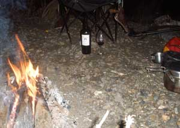
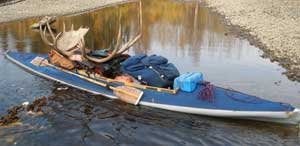
Day 2. A light covering of snow on the ground and kayak. A robust morning. The clouds cleared at noon, for a crisp but pleasant day. 26 carries, count them, twenty six, of one to eight heavy loads. Some trenching was done. I laughed a lot. The kayak was laden. The water came up to the blue canvas deck, above the gray hypolon hull, when I was walking beside the kayak, and over the top of the canvas a bit when I was sitting on it, paddling. The photos show the kayak up a bit on rocks, so the kayak did not drift away while the camera guy was fiddling with the camera. I passed my first-day camp, stopping awhile to leave my traditional report in a corked empty wine bottle back in the woods beside a lone spruce tree.Around the corner downstream there was a bit of a miscalculation in regard to the weight of the kayak in a fast flowing slot where the water went on the other side of a jumble of logs in the creek. I was excessively casual for only one step too far, in water only an inch too deep, only long enough for both hip waders to fill completely with noticeably refreshing cold water. I laughed. I wrung out and continued on with a bit more energetic attitude. A nice camp late that evening, with a camp fire. I finished the wine. An aurora entertained my evening stand-about. A good show of satellites traced their way across the sky.
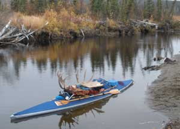
Day 3. 28 carries of one to eight heavy loads. Yes, I counted each load, repeating the current number each time I pulled another heavy bag of meat out of the kayak. Pushing and pulling the still-heavy kayak over wet rocks. I dug trenches. I moved big rocks in a couple of the rapids, and carefully threaded the kayak through them. The hills were white with snow. With the freezing of surface water in the hills and valley, the creek was getting lower faster than I was getting downstream. I sawed through a couple trees that had fallen across the creek while I was upstream. I laughed a lot. My nice new hip waders were not of the quality they should have been, with wear spots at creases close to becoming holes, and rub spots on my legs having already required some tape. My hands were suggesting some limits to the cold water and abrasions. I was concerned with just how much of the bottom of the kayak's hypolon hull I was wearing away. But a pleasant camp that night.
Day 4. 22 carries of one to eight heavy loads. Twenty two. Pushing and pulling the kayak over wet rocks. I dug trenches. I laughed a lot. I pressed on with the dedication of nearing the goal. When I concluded I had packed past the last riffle, I had to pack past three more. I reached the road 4:30 PM, still floating with no holes in the hull, much relieved. Upon inspection, I had wore through the keel strips and through my double hull, down to the inner hull, the very reason I double hulled my Klepper.
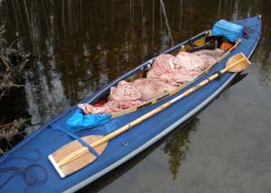
The photo showing the game bags of meat does not include two packs with bags of meat.I did not encounter the lone goose of Secret Creek this year, or my merganser friends, each of whom were farther up the creek in previous years.
Not yet done with obstacles, when I started to drive up out of the parking area below the bridge, an official-looking pick-up was parked on the road in front of the turn-off entrance. I got out of my jeep and walked up to notice a Weights and Measures emblem on the door. Weights and Measures. Hmmmm. The driver asked me to wait awhile because a wide load was coming. I mentioned that I had a jeep and that I could pull off the road when I encountered the truck. Sometimes these slow trucks are a long ways behind their lead cars. He said that is was a WIDE load. About that time I looked down the road to notice the WIDE load. WIDE. Slow moving. When it finally got to the bridge, it slowed to a slower crawl, carefully squeezing the load between the bridge guard rails. I was entertained to watch it pass in front of me, rolling on more wheels than I could count from one side. It had one big truck pulling, two pushing, two behind it in reserve, and some repair trucks. It was a complete north slope oil field module, which are normally shipped by barge. This one was apparently too late for this year's departure date. Well, what with the DemocanRepublicrat War Regime's Presidential Ego Gratification Wars against the primary oil producing culture, and the inherent retaliation pricing of oil, the war-crazed idiots in Washington DC are desperate to get more oil any way they can. The roaded module adventure was sort of like being too far down a too narrow road with too wide a load, but with patience and work, they too probably reached their destination, with more knowledge.
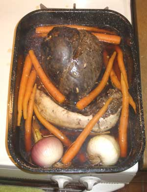
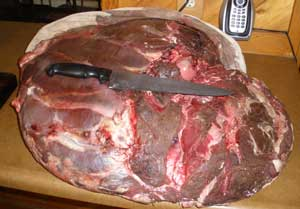
There were no few days methodically cutting and wrapping moose meat for the freezer.
Of course the heart and tongue meal was enjoyed during that endeavor.
And there we jolly well have it for another moose story. A smart person hunts for meat in a grocery store.
The rock story......
2006 The rock at the head of the straight stretch, looking downstream, normal water level.
2007 The rock at the head of the straight stretch, looking upstream, low water.
2008 Where the rock should have been, looking downstream (marked in red).
Where the rock should have been, looking upstream.
2008 The rock 300 yards down at the downstream end of the straight stretch.
Looking downstream.
Looking downstream.
Looking upstream.
The 2008 Big Bottle Party, on the night before Christmas.........
It was a Bathazar size (12 liter) bottle of Tefft Cellars 2005 Cabernet Sauvignon.
It was a genuinely pleasant flavor, perhaps an ideal vintage for a medium bodied Yakima valley Washington Cabernet Sauvignon. All responses were most favorable. Those of the more refined wine society present rated it as the best Tefft they had the honor to enjoy.
Sometimes you have to get by with only one bottle of wine for everyone.
And we had some truly critical wine analysts, as you can see by the expressions on their faces as they first pontificated on the initial cork indicators.
The master pourer poured the first glass for the master first glass holder, both prestigious officials of the Big Bottle.
Thereafter there was a lot of prestigious pouring going on among many officials of the Big Bottle......
During all that prestigious pouring, the John Reeves Ice Tower slide show, with cool music, played as background entertainment.
The discussions of fine wine and concepts common to the far frozen north, where the temperature recently fluctuated 100 degrees in three days, were swirled with the wine.
They could be mentioned, but you can just let your imagination run from botany at the farthest north circumpolar spots of land or rock, to the Bilderbergers failed attempts to control more than the ultimately useless paper money they traded for their otherwise priceless human minds. A few Montana ranching stories got mixed with Alaska and Arizona gold mining ventures. Some alternative energy concepts reached the aurora. The currently primitive state of common language skills for knowledge conveyance hindered the discussion on the currently primitive state of common language skills for knowledge conveyance. However, the wine and the increasingly detailed knowledge of wine mitigated a gradient of otherwise rudimentary skills
The lawyer's socially redeeming attributes were his knowledge of fine wine and his generally pleasant nature.
And the guy who works for the Queen was drawing a picture to avoid an attempt at the Queen's English.
Verifiably wine-influenced comments.
The master pourer got the last glass, of course.
And the bear with 4,477 natural mother of pearl buttons, sewn with flax thread, with old serge edge red 100 percent wool fabric on a navy blue dyed 4 point Hudson's Bay blanket, for a Northwest Coast button blanket, officiated the final official photo.
The bear and the guy with the bottle look like two old grumps, but that is the way official old photos are supposed to look.
And there we jolly well have it for another bottle of wine.
The annual Christmas form letter.......
Merry Christmas, Merry Christmas, Merry Christmas, and a Happy New Year and all that sort of traditional rhetoric.
Didn't we just do this last year?
I enjoyed another year in Fairbanks Alaska and did much of what I did last year, therefore not doing all that I was supposed to do last year and this year, albeit as usual. From the annual Christmas form letters I have received, it appears that everybody is on schedule variously ahead of my adventures.
What I did is online at various websites known, linked or obscure, so it is ascribed to record that need not be reviewed because you have entirely too many of your own things to get done. I rather enjoyed uploading the genuinely obscure website.
I put a moose in the freezer, put 40 Chitina Copper River Red salmon in the freezer, enjoyed the Helena Montana adventure, upgraded Betty's Island at Yakima Washington, planted some trees around an old gravel pit, put another long bolt between the two sides of my Jeep to hold it together, I assisted with some websites and such stuff, with FreedomOutlaws.com being among them. A gaggle of small projects were completed. Last winter's John Reeves Ice Tower was completed in grand style, which facilitated my tenuous claim to still being a climber. We did some high quality ice climbing in low temperatures, much to our amusement. A new ice tower was not started this winter, for lack of adequate where-with-all. Maybe next winter.
At the prestigious Alaskan Alpine Club Headquarters I added more artificial Christmas trees, from the dumpsters, to the headquarters forest that visually obscures the parking area that was expanded with more gravel. More spruce and birch saplings were planted for the future visual buffer along Weston Drive. More raspberries were planted. I cut out two of the steel dragon legs for the elevated yard fire pit for the Club HQ, started seriously arranging the Alaska Mountaineering Museum, did not get the big white ice axe on the roof for the next Google Earth photo, but got a photo of the Club HQ on the Panoramio option of Google Earth. The very durable new rain gutter made from ABS pipe was finished. I started a new storage shed just in time for winter to impede my efforts. The HQ rock and ice climbing wall was adequately discussed, but not adequately started. Next summer for the climbing wall and shed.
That's it. That's it. If I think of anything else I might upload it. Merry Christmas, Happy New Year. Hit the computer off button, get something useful done and let me know how much fun you had doing it.
There may be more stories after I see what-all on my desk is too late to get done anyway.
Stories 14
Stories 1
Stories 2
Stories 3
Stories 4
Stories 5
Stories 6
Stories 7
Stories 8
Stories 9
Stories 10
Stories 11
Stories 12
Places
Concepts
Smoking
Smoke Photos
Smoke Others
Stuff
Links
Home